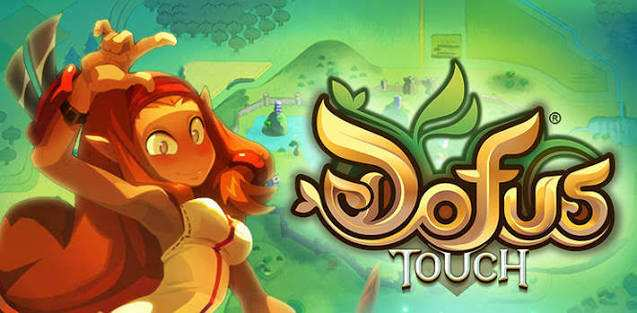

Ankama Games
Games Overview
MMORPG
Dofus

DOFUS is a French MMORPG developed by Ankama, released on September 1, 2004. The game takes place in a fantasy universe called the World of Twelve, where players explore, fight monsters, and complete quests. The main goal is to find the precious dragon eggs called the Dofus. Thanks to its tactical turn-based combat, numerous character classes, and rich universe, DOFUS has become an iconic game in French video game history.
Dofus RETRO
DOFUS Retro is a version of the French MMORPG DOFUS, developed by Ankama and launched on September 24, 2019. It allows players to experience the older version of the game, complete with its 2D graphics, classic gameplay, and tactical turn-based combat. The objective is to explore the World of Twelve, fight monsters, complete quests, and find the precious dragon eggs known as the Dofus. This version particularly appeals to nostalgic players seeking the game's original experience.

Dofus Touch

DOFUS Touch is an MMORPG developed by Ankama, released in 2016 for smartphones and tablets. This version retains the core mechanics of DOFUS while offering an experience tailored for mobile devices. It features its own dedicated servers, economy, and adapted progression system, allowing players to embark on adventures anywhere. Between PvP, dungeons, professions, and trading, DOFUS Touch delivers a complete online gaming experience for fans.
Wakfu

WAKFU is an MMORPG developed by Ankama, officially released on February 29, 2012. The story takes place in the World of Twelve, several centuries after the era of DOFUS, in a world transformed by a massive cataclysm. The game stands out for its dynamic ecosystem system, where players can influence nature and resources, as well as a political system allowing players to elect governors. Combining exploration, tactical combat, and world management, WAKFU offers an experience that places great emphasis on player choice.
Waven
WAVEN is a tactical role-playing game developed by Ankama, released in Early Access in August 2023. Set in the Krosmoz universe—the overarching cosmos housing the World of Twelve—it features an adventure centered around strategic battles where spell selection, equipment, and companions play a crucial role. With its colorful 3D art style and customizable progression system, WAVEN refreshes the Ankama gaming experience while remaining accessible on PC and mobile devices.

ANKAMA Universe

The Krosmoz universe is a fantasy world created by Ankama that connects several games, including DOFUS, DOFUS Retro, DOFUS Touch, WAKFU, and WAVEN. Filled with magic, mythical creatures, deities, and legends, it stands out for its rich lore and diverse worlds. Each game also maintains its own distinct visual identity: DOFUS and DOFUS Retro are characterized by their colorful, hand-drawn 2D style; WAKFU features an art direction inspired by animated series; while WAVEN adopts a 3D aesthetic with stylized shapes and vibrant colors. This visual diversity, combined with offbeat humor and endearing characters, gives the Krosmoz a unique identity recognizable across Ankama's games, animated series, and films.
Other Console & PC Games
Savara
SAVARA is an action roguelite developed by Doryah Games and published by Ankama Games, released on May 6, 2025, on PC. Players take on the role of Savara, a warrior chosen as the champion of the god Iop, and must face formidable creatures in challenging battles. The game emphasizes weapon mastery, dodging, and precise timing to defeat opponents. Set in a fantasy universe inspired by Ankama's vibrant visual style, it features a mythological atmosphere centered around heroic trials and the quest for glory.

Maliki: Poison of the Past

Maliki: Poison of the Past is an adventure game developed by Blue Banshee and published by Ankama, released on May 22, 2025. Inspired by the *Maliki* comic book series, it follows the adventures of Maliki and her companions on a time-bending quest to prevent a catastrophic threat from destroying their world. The game blends exploration, puzzles, and turn-based combat with a time-manipulation mechanic. Its artistic style captures the colorful manga aesthetic of the comic book, featuring expressive characters, hand-drawn environments, and a blend of humor, fantasy, and sci-fi.
One More Gate: A Wakfu Legend
One More Gate: A Wakfu Legend is a deck-building roguelite developed by Ankama, set in the WAKFU universe. Players control Oropo as he travels through mysterious portals to explore dangerous locations and fight enemies. Combat relies on building a custom deck of spells and cards that can be combined strategically to unleash powerful attacks. The game features the colorful visual style and signature humor of the Krosmoz, with hand-drawn 2D environments and colorful characters. The game was released on September 12, 2023, on PC following an Early Access period, and later on May 21, 2024, on Nintendo Switch.

Krosfighter

Krosfighter is a party shooter developed by Doryah Games in collaboration with Ankama Games, released on March 13, 2024. The game brings together characters from the Krosmoz and other Ankama franchises in frantic battles where the goal is to be the last survivor. Playable with up to four players locally or online, it offers distinct heroes with unique fighting styles, alongside unpredictable interventions from gods that can turn the tide of battle. Its colorful, comic-book-inspired art style accompanies a dynamic, chaotic, and humor-filled multiplayer experience.
Super Nano Blaster
Super Nano Blaster is a shoot 'em up developed by 3.5 Inch Team and published by Ankama Games, released on PC and Mac in 2021. Players pilot a ship through a retro digital universe infected by a virus known as The Void, fighting to reach the source of the infection. The game features fast-paced combat, eight unique ships to master, and an innovative dimension-switching mechanic to dodge obstacles and outmaneuver enemies. Playable solo or in local co-op, it stands out for its pixel art aesthetic, futuristic atmosphere, and demanding arcade pacing.

Krosmaga

Krosmaga is a strategic card game developed by Ankama, blending collectible card game mechanics with tower defense gameplay. Set in the Krosmoz universe, players assume the roles of gods and construct decks using cards representing characters, creatures, and spells from DOFUS and WAKFU. Battles take place on a multi-lane board where players must deploy units and advance strategically to destroy enemy Dofus while defending their own. The game is known for its vibrant art style, humor, and tactical depth. Released on April 12, 2017, on PC, Krosmaga also includes single-player campaign adventures.